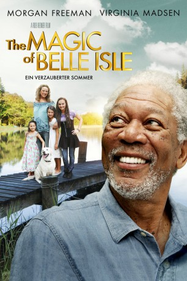

#1740 The Magic of Belle Isle - Ein verzauberter Sommer
Alternativ: The Magic of Belle Isle
 
 IMDB-Wertung: 7.0 / 10
IMDB-Wertung: 7.0 / 10  Metascore: 46
Metascore: 46 
Der bekannte, an den Rollstuhl gebundene Schriftsteller Monte Wildhorn zieht in eine ländliche Stadt, um sein verlorengeglaubtes Talent wiederzufinden. Dort freundet er sich mit der alleinerziehenden Mutter Mrs. O'Neil und ihren drei Töchtern an, die ihm helfen, seine Inspiration wiederzufinden.
Jahr: 2012
Dauer: 109 Minuten
FSK:
Land: USA Studio: Magnolia PicturesTonspuren:
Untertitel:
Auflösung: 1080p (1920x1040) Größe: 6082 MB
Genre: Komödie, Drama
Regisseur:  Rob Reiner
Rob Reiner
Drehbuch: Guy Thomas, Rob Reiner, Andrew Scheinman
Soundtrack: Marc Shaiman
Darsteller:
Datei: X:\2012(G-M)\Magic of Belle Isle - Ein verzauberter Sommer, The (2012, FSK, 1920x1040).mkv seit 12.08.2015
Festplatte: HD 2012(A-M)
 Es gibt insgesamt 112 Filme in der Gruppe '2012(G-M)'
Es gibt insgesamt 112 Filme in der Gruppe '2012(G-M)'